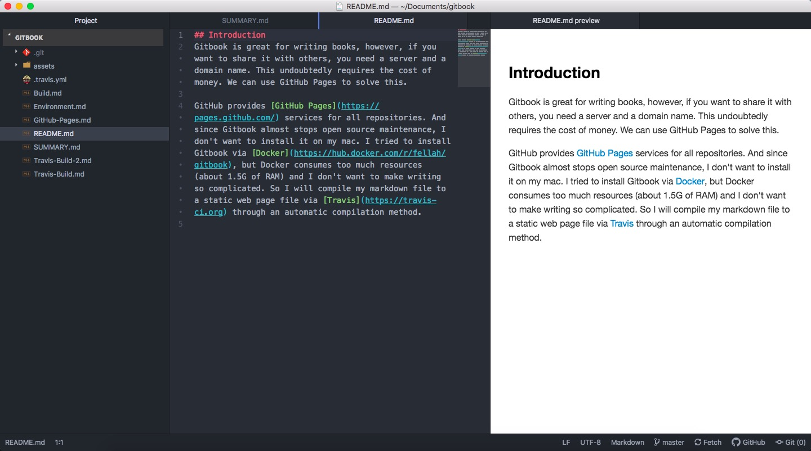

<!DOCTYPE html>
<!--[if IE 8]><html class="no-js lt-ie9" lang="en" > <![endif]-->
<!--[if gt IE 8]><!--> <html class="no-js" lang="en" > <!--<![endif]-->
<head>
  <meta charset="utf-8">
  
  <meta name="viewport" content="width=device-width, initial-scale=1.0">
  
  <title>Environment &mdash; Sphinx-ReadTheDocs 1.0.0 documentation</title>
  

  
  
  
  

  
  <script type="text/javascript" src="../_static/js/modernizr.min.js"></script>
  
    
      <script type="text/javascript" id="documentation_options" data-url_root="../" src="../_static/documentation_options.js"></script>
        <script type="text/javascript" src="../_static/jquery.js"></script>
        <script type="text/javascript" src="../_static/underscore.js"></script>
        <script type="text/javascript" src="../_static/doctools.js"></script>
        <script type="text/javascript" src="../_static/language_data.js"></script>
    
    <script type="text/javascript" src="../_static/js/theme.js"></script>

    

  
  <link rel="stylesheet" href="../_static/css/theme.css" type="text/css" />
  <link rel="stylesheet" href="../_static/pygments.css" type="text/css" />
    <link rel="index" title="Index" href="../genindex.html" />
    <link rel="search" title="Search" href="../search.html" />
    <link rel="next" title="Sphinx Project Build" href="Git-Build.html" />
    <link rel="prev" title="Introduction" href="Introduction.html" /> 
</head>

<body class="wy-body-for-nav">

   
  <div class="wy-grid-for-nav">
    
    <nav data-toggle="wy-nav-shift" class="wy-nav-side">
      <div class="wy-side-scroll">
        <div class="wy-side-nav-search" >
          

          
            <a href="../index.html" class="icon icon-home"> Sphinx-ReadTheDocs
          

          
          </a>

          
            
            
          

          
<div role="search">
  <form id="rtd-search-form" class="wy-form" action="../search.html" method="get">
    <input type="text" name="q" placeholder="Search docs" />
    <input type="hidden" name="check_keywords" value="yes" />
    <input type="hidden" name="area" value="default" />
  </form>
</div>

          
        </div>

        <div class="wy-menu wy-menu-vertical" data-spy="affix" role="navigation" aria-label="main navigation">
          
            
            
              
            
            
              <p class="caption"><span class="caption-text">Contents:</span></p>
<ul class="current">
<li class="toctree-l1"><a class="reference internal" href="Introduction.html">Introduction</a></li>
<li class="toctree-l1 current"><a class="current reference internal" href="#">Environment</a><ul>
<li class="toctree-l2"><a class="reference internal" href="#outline">Outline</a></li>
<li class="toctree-l2"><a class="reference internal" href="#git-installation">Git Installation</a></li>
<li class="toctree-l2"><a class="reference internal" href="#atom-installation">Atom Installation</a></li>
<li class="toctree-l2"><a class="reference internal" href="#python-packages">Python packages</a></li>
</ul>
</li>
<li class="toctree-l1"><a class="reference internal" href="Git-Build.html">Sphinx Project Build</a></li>
<li class="toctree-l1"><a class="reference internal" href="Travis-Setting.html">Travis Setting</a></li>
<li class="toctree-l1"><a class="reference internal" href="Travis-Build.html">Travis Build</a></li>
<li class="toctree-l1"><a class="reference internal" href="GitHub-Pages.html">Github Pages</a></li>
<li class="toctree-l1"><a class="reference internal" href="Math-Support.html">Math Support</a></li>
</ul>

            
          
        </div>
      </div>
    </nav>

    <section data-toggle="wy-nav-shift" class="wy-nav-content-wrap">

      
      <nav class="wy-nav-top" aria-label="top navigation">
        
          <i data-toggle="wy-nav-top" class="fa fa-bars"></i>
          <a href="../index.html">Sphinx-ReadTheDocs</a>
        
      </nav>


      <div class="wy-nav-content">
        
        <div class="rst-content">
        
          


<div role="navigation" aria-label="breadcrumbs navigation">

  <ul class="wy-breadcrumbs">
    
      <li><a href="../index.html">Docs</a> &raquo;</li>
        
      <li>Environment</li>
    
    
      <li class="wy-breadcrumbs-aside">
        
            
            <a href="../_sources/docs/Environment.md.txt" rel="nofollow"> View page source</a>
          
        
      </li>
    
  </ul>

  
  <hr/>
</div>
          <div role="main" class="document" itemscope="itemscope" itemtype="http://schema.org/Article">
           <div itemprop="articleBody">
            
  <div class="section" id="environment">
<h1>Environment<a class="headerlink" href="#environment" title="Permalink to this headline">¶</a></h1>
<div class="section" id="outline">
<h2>Outline<a class="headerlink" href="#outline" title="Permalink to this headline">¶</a></h2>
<ul class="simple">
<li><p>git installation</p></li>
<li><p>Atom installation</p></li>
<li><p>Python packages</p></li>
</ul>
</div>
<div class="section" id="git-installation">
<h2>Git Installation<a class="headerlink" href="#git-installation" title="Permalink to this headline">¶</a></h2>
<p>install <a class="reference external" href="https://brew.sh/index_zh-cn">Homebrew</a> by using commond:</p>
<div class="highlight-default notranslate"><div class="highlight"><pre><span></span><span class="o">/</span><span class="n">usr</span><span class="o">/</span><span class="nb">bin</span><span class="o">/</span><span class="n">ruby</span> <span class="o">-</span><span class="n">e</span> <span class="s2">&quot;$(curl -fsSL https://raw.githubusercontent.com/Homebrew/install/master/install)&quot;</span>
</pre></div>
</div>
<p>and using Homebrew to install git:</p>
<div class="highlight-default notranslate"><div class="highlight"><pre><span></span><span class="n">brew</span> <span class="n">install</span> <span class="n">git</span>
</pre></div>
</div>
<blockquote>
<div><p>No need to update. It will update automatically before any installation.</p>
</div></blockquote>
</div>
<div class="section" id="atom-installation">
<h2>Atom Installation<a class="headerlink" href="#atom-installation" title="Permalink to this headline">¶</a></h2>
<p>Go to the <a class="reference external" href="https://atom.io/">Atom</a> to download the latest version.
And also install essential packages:</p>
<div class="highlight-default notranslate"><div class="highlight"><pre><span></span><span class="n">language</span><span class="o">-</span><span class="n">markdown</span>
<span class="n">markdown</span><span class="o">-</span><span class="n">preview</span><span class="o">-</span><span class="n">enhanced</span>
<span class="n">markdown</span><span class="o">-</span><span class="n">table</span><span class="o">-</span><span class="n">editor</span>
</pre></div>
</div>
<p></p>
</div>
<div class="section" id="python-packages">
<h2>Python packages<a class="headerlink" href="#python-packages" title="Permalink to this headline">¶</a></h2>
<p>Install the <code class="docutils literal notranslate"><span class="pre">sphinx</span></code> and <code class="docutils literal notranslate"><span class="pre">theme</span></code> package using pip:</p>
<div class="highlight-default notranslate"><div class="highlight"><pre><span></span><span class="n">pip</span> <span class="n">install</span> <span class="n">sphinx</span> <span class="n">sphinx</span><span class="o">-</span><span class="n">autobuild</span> <span class="n">sphinx_rtd_theme</span>
</pre></div>
</div>
</div>
</div>


           </div>
           
          </div>
          <footer>
  
    <div class="rst-footer-buttons" role="navigation" aria-label="footer navigation">
      
        <a href="Git-Build.html" class="btn btn-neutral float-right" title="Sphinx Project Build" accesskey="n" rel="next">Next <span class="fa fa-arrow-circle-right"></span></a>
      
      
        <a href="Introduction.html" class="btn btn-neutral float-left" title="Introduction" accesskey="p" rel="prev"><span class="fa fa-arrow-circle-left"></span> Previous</a>
      
    </div>
  

  <hr/>

  <div role="contentinfo">
    <p>
        &copy; Copyright 2019, seel

    </p>
  </div>
  Built with <a href="http://sphinx-doc.org/">Sphinx</a> using a <a href="https://github.com/rtfd/sphinx_rtd_theme">theme</a> provided by <a href="https://readthedocs.org">Read the Docs</a>. 

</footer>

        </div>
      </div>

    </section>

  </div>
  


  <script type="text/javascript">
      jQuery(function () {
          SphinxRtdTheme.Navigation.enable(true);
      });
  </script>

  
  
    
   

</body>
</html>